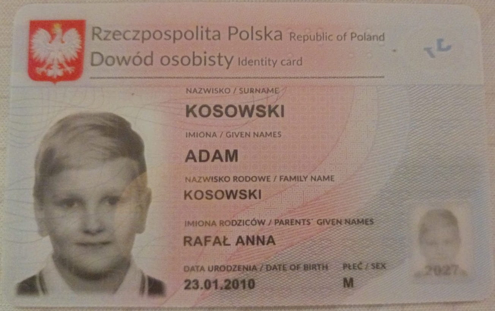

Dowiedzieć się, w jaki sposb wyrobic dowód osobisty
Nauczyć się, gdzie i jak złożyć wniosek
Poznać i zebrac wymagane dokumenty
Dowiedzieć sie ile czasu zajmie cala procedura
Podczas wykonywania projektu
Nauczyłem się, jak wypełniać wniosek o wydanie dowodu osobistego(wniosek o dowód można złożyć online przez strone lub fizycznie)
Zapoznałem się z platformą gov.pl i jej funkcjami
Dowiedziałem się ile trwa caly proces zakladania dowodu
Otrzymałem dowód osobisty
Dowód

Opis przebiegu działań i rozwoju wiedzy:
Co udało mi się zrobić?
Udalo mi sie poznac całą procedure wyrobienia dowodu osobistego, od złożenia wniosku, przez zebranie dokumentów,
aż do odebrania gotowego dowodu osobistego.
Jakie napotkałem trudności i jak je pokonałem?
Najwieksza trudnosc jaką napotkałem to zebranie wszystkich potrzebnych dokumentów, ponieważ niektore z nich były bardzo specificzne i nie miałem ich pod reka
Czy cały proces jest trudny?
Cały proces nie jest trudny, jednak wymaga cierpliwości przy wypelnianiu wniosku oraz zbieraniu dokumentów.Rownież dla osób starszych wypełnianie formularzy online może byc mylące
Co planuje zrobic z pozyskana wiedza?
Zdobyta wiedza sprzyda mi sie w przyszłosci przy wyrobieniu kolejnych dokumentów takich jak paszport czy prawo jazdy